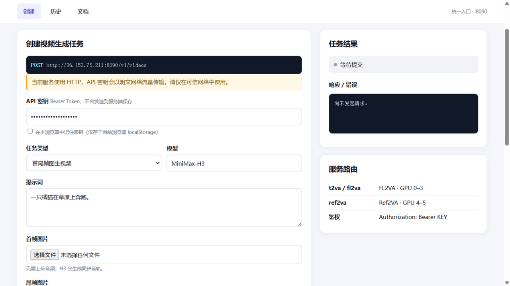
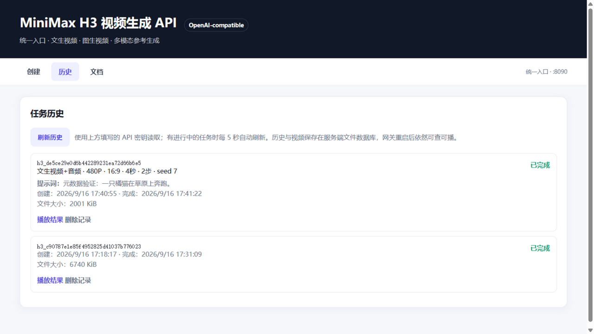

自建 GPU 服务器上的 MiniMax-H3 视频生成统一服务 —— Docker Compose 双后端编排、统一 API 网关、中文 Web 控制台，以及解锁首尾帧图生视频与纯图片参考的推理管线补丁。
FL2VA（文生/首尾帧图生）与 Ref2VA（参考生成）分占不同 GPU，网关按请求内容自动路由，对外只暴露一个模型名和一个端口。
推理补丁启用尾帧、首尾帧关键帧锚定与纯图片参考生成 —— 能力在模型与底层布局里本就存在，只差胶水层。
任务元数据存 SQLite 文件数据库，视频文件落盘；网关重启后历史依然可查、可播、可下载。
表单创建、实时等待计时、自动刷新、取消/删除、浏览器记住密钥，内置完整中文 API 文档。
| 模式 | 输入 | 效果 |
|---|---|---|
| 文生视频 t2va | 提示词 | 文生视频 + 同步音轨，需指定比例 |
| 首帧图生视频 | 提示词 + 首帧图 | 从给定首帧自然展开 |
| 尾帧图生视频 | 提示词 + 尾帧图 | 画面自然落到给定结尾帧 |
| 首尾帧图生视频 | 首帧 + 尾帧 | 两帧之间平滑插值过渡 |
| 图片参考生成 | 参考图（音频可选） | 主体一致性；搭配音频可指定音色 |
| 视频参考生成 | 参考视频 | 使用源视频音轨驱动运动与声音 |

创建任务：六种模式、分辨率/比例/时长/步数/种子

任务历史：类型、参数、提示词、耗时、播放/删除
$ cp .env.example .env # 设置 H3_API_KEY 与 H3_MODEL_DIR $ cd patches && docker build -t vllm/vllm-omni:minimax-h3 . # 构建含补丁的推理镜像 $ ./manage.sh start # 启动 fl2va / ref2va / gateway 三服务 $ ./manage.sh status # 等待后端 healthy $ python3 tests/api_test.py # 29 项接口测试 + Markdown 报告
$ curl -X POST "http://localhost:8090/v1/videos" \
-H "Authorization: Bearer $H3_API_KEY" \
-H "Content-Type: application/json" \
-d '{"model":"MiniMax-H3",
"content":[{"type":"text","text":"一只橘猫在草原上奔跑。"}],
"resolution":"768P","duration":5,"ratio":"16:9"}'
{"id":"h3_...","status":"queued",...} # 轮询 GET /v1/videos/{id}，完成后下载 /content
| 方法 | 路径 | 说明 |
|---|---|---|
| POST | /v1/videos | 创建异步任务，返回任务 ID |
| GET | /v1/videos/{id} | 查询状态与元数据（类型/提示词/参数） |
| GET | /v1/videos/{id}/content | 下载生成的 MP4 |
| DELETE | /v1/videos/{id} | 取消进行中任务 / 删除记录与文件 |
| POST | /v1/videos/sync | 同步生成，直接返回 MP4 |
| GET | /health | 双后端健康聚合 |
┌──────────────────────────────┐
浏览器 / 客户端 ───▶ │ Gateway :8090 (FastAPI) │
│ · 路由 / 鉴权 / 异步任务 │
│ · SQLite 持久化 + 视频落盘 │
│ · SSRF 防护 / 中文控制台 │
└──────────┬─────────┬─────────┘
│ │
┌──────────────▼──┐ ┌──▼──────────────┐
│ h3-fl2va :8091 │ │ h3-ref2va :8092 │
│ GPU 0–3 │ │ GPU 4–5 │
│ t2va / fl2va │ │ ref2va │
└─────────────────┘ └─────────────────┘
服务端 .env（600 权限）；浏览器端仅可选保存在本机 localStorage。8090 为明文 HTTP，请只在可信网络暴露。
参考素材 URL 仅接受 data URL 与公网 http(s)；内网、环回、保留地址一律拒绝。
默认 6×GPU（L40 实测配置，可在 compose 调整）；建议主机内存 ≥384GB 用于层级卸载。
2K 未启用；推理步数默认 50；vllm-omni 路径参考矩阵为 1 图（+1 音频）/ 多视频。